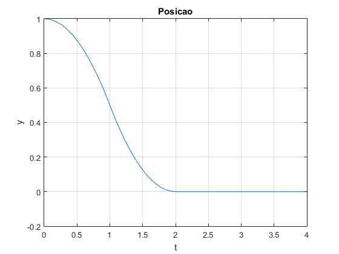
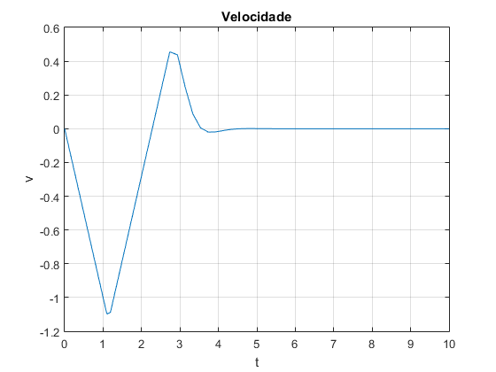

Contents
2 Laboratorio de Modelacao e Simulacao
2Semestre - 2016/2017
Luis Almeida, n 81232
Pedro Vasco, n 81880
Grupo 11 Turno 2 feira 10hclear all; close all; clc;
2.
% Definicao do intervalo de tempo e constante beta t=-1:0.01:1; beta=0.3; % Geracao do impulso pbeta=impulso(t,beta); figure(); plot(t,pbeta); grid on; xlabel('t'); ylabel('p_{\beta}'); title('Impulso (\beta=0.3)'); beta=0; % Geracao do impulso pbeta=impulso(t,beta); figure(); plot(t,pbeta); grid on; xlabel('t'); ylabel('p_{\beta}'); title('Impulso (\beta=0)'); beta=1; % Geracao do impulso pbeta=impulso(t,beta); figure(); plot(t,pbeta); grid on; xlabel('t'); ylabel('p_{\beta}'); title('Impulso (\beta=1)');
3.
% Definicao das constantes para construcao do sinal de controlo u(t) U1=1; U2=1; T=1; alfa=1.5; beta=0.2; n1=100; n2=100; % Construcao do sinal [u,t] = sinal( T, alfa, beta, U1, U2, n1, n2 ); figure(); plot(t,u); grid on; xlabel('t'); ylabel('u(t)'); title('Sinal');
Definicao das constantes para construcao do sinal de controlo u(t)
U1=1; U2=1; T=4; alfa=2.5; n1=100; n2=100; % Construcao do sinal [u,t] = sinal( T, alfa, beta, U1, U2, n1, n2 ); figure(); plot(t,u); grid on; xlabel('t'); ylabel('u(t)'); title('Sinal');
Definicao das constantes para construcao do sinal de controlo u(t)
U1=1; U2=2; T=1; alfa=0.5; n1=100; n2=100; % Construcao do sinal [u,t] = sinal( T, alfa, beta, U1, U2, n1, n2 ); figure(); plot(t,u); grid on; xlabel('t'); ylabel('u(t)'); title('Sinal');
7.
clear all; close all; clc; b=0; % Caso de alfa=0.5 e beta=0.2 alfa=0.5; beta=0.2; % Calculo de T e U1 segundo as formulas determinadas teoricamente T=sqrt(2*(1+beta)*(1+alfa)/alfa); T1=T/(1+alfa); U1=(2*(1+beta))/(((T1)^2)*(alfa+1)); U2=U1/alfa; % Numero de pontos n1=200; n2=200; [u,t] = sinal( T, alfa, beta, U1, U2, n1, n2 ); np=n1+n2-1; step=T/np; u_entrada.time=[t']; u_entrada.signals.values=[u']; u_entrada.signals.dimensions=[1]; sim('sim1',t); tsim1=tsim; y1=y; yponto1=yponto;
Caso de alfa=1 e beta=0.2
alfa=1; beta=0.2; % Calculo de T e U1 segundo as formulas determinadas teoricamente T=sqrt(2*(1+beta)*(1+alfa)/alfa); T1=T/(1+alfa); U1=(2*(1+beta))/(((T1)^2)*(alfa+1)); U2=U1/alfa; [u,t] = sinal( T, alfa, beta, U1, U2, n1, n2 ); u_entrada.time=[t']; u_entrada.signals.values=[u']; u_entrada.signals.dimensions=[1]; sim('sim1',t); tsim2=tsim; y2=y; yponto2=yponto;
Caso de alfa=1.3 e beta=0.4
alfa=1.3; beta=0.4; % Calculo de T e U1 segundo as formulas determinadas teoricamente T=sqrt(2*(1+beta)*(1+alfa)/alfa); T1=T/(1+alfa); U1=(2*(1+beta))/(((T1)^2)*(alfa+1)); U2=U1/alfa; [u,t] = sinal( T, alfa, beta, U1, U2, n1, n2 ); u_entrada.time=[t']; u_entrada.signals.values=[u']; u_entrada.signals.dimensions=[1]; sim('sim1',t); tsim3=tsim; y3=y; yponto3=yponto;
Desenho dos graficos
% Evolucao da posicao figure(); plot(tsim1,y1,'r'); grid on; hold on; xlabel('t'); ylabel('y(t)'); title('Posicao do braco'); plot(tsim2,y2,'m'); plot(tsim3,y3,'b'); hold off; legend('alfa=0.5 e beta=0.2','alfa=1 e beta=0.2','alfa=1.3 e beta=0.4'); % Evolucao da velocidade figure(); plot(tsim1, yponto1,'r'); grid on; hold on; xlabel('t'); ylabel('$$\dot{y} (t)$$','interpreter','latex'); title('Velocidade do braco'); plot(tsim2, yponto2,'m'); plot(tsim3, yponto3,'b'); hold off; legend('alfa=0.5 e beta=0.2','alfa=1 e beta=0.2','alfa=1.3 e beta=0.4'); % Plano (posicao,velocidade) figure(); plot(y1,yponto1,'r'); grid on; hold on; xlabel('y'); ylabel('$$\dot{y} (t)$$','interpreter','latex'); title('Plano (y, $$\dot{y}$$)','interpreter','latex'); plot(y2,yponto2,'m'); plot(y3,yponto3,'b'); hold off; legend('alfa=0.5 e beta=0.2','alfa=1 e beta=0.2','alfa=1.3 e beta=0.4');

Versao perturbada
b=0.025; % Caso de alfa=0.5 e beta=0.2 alfa=0.5; beta=0.2; % Calculo de T e U1 segundo as formulas determinadas teoricamente T=sqrt(2*(1+beta)*(1+alfa)/alfa); T1=T/(1+alfa); U1=(2*(1+beta))/(((T1)^2)*(alfa+1)); U2=U1/alfa; [u,t] = sinal( T, alfa, beta, U1, U2, n1, n2 ); np=n1+n2-1; step=T/np; u_entrada.time=[t']; u_entrada.signals.values=[u']; u_entrada.signals.dimensions=[1]; sim('sim1',t); tsim1=tsim; y1=y; yponto1=yponto;
Caso de alfa=1 e beta=0.2
alfa=1; beta=0.2; % Calculo de T e U1 segundo as formulas determinadas teoricamente T=sqrt(2*(1+beta)*(1+alfa)/alfa); T1=T/(1+alfa); U1=(2*(1+beta))/(((T1)^2)*(alfa+1)); U2=U1/alfa; [u,t] = sinal( T, alfa, beta, U1, U2, n1, n2 ); u_entrada.time=[t']; u_entrada.signals.values=[u']; u_entrada.signals.dimensions=[1]; sim('sim1',t); tsim2=tsim; y2=y; yponto2=yponto;
Caso de alfa=1.3 e beta=0.4
alfa=1.3; beta=0.4; % Calculo de T e U1 segundo as formulas determinadas teoricamente T=sqrt(2*(1+beta)*(1+alfa)/alfa); T1=T/(1+alfa); U1=(2*(1+beta))/(((T1)^2)*(alfa+1)); U2=U1/alfa; [u,t] = sinal( T, alfa, beta, U1, U2, n1, n2 ); u_entrada.time=[t']; u_entrada.signals.values=[u']; u_entrada.signals.dimensions=[1]; sim('sim1',t); tsim3=tsim; y3=y; yponto3=yponto;
Desenho dos graficos
% Evolucao da posicao figure(); plot(tsim1,y1,'r'); grid on; hold on; xlabel('t'); ylabel('y(t)'); title('Posicao do braco'); plot(tsim2,y2,'m'); plot(tsim3,y3,'b'); hold off; legend('alfa=0.5 e beta=0.2','alfa=1 e beta=0.2','alfa=1.3 e beta=0.4'); % Evolucao da velocidade figure(); plot(tsim1, yponto1,'r'); grid on; hold on; xlabel('t'); ylabel('$$\dot{y} (t)$$','interpreter','latex'); title('Velocidade do braco'); plot(tsim2, yponto2,'m'); plot(tsim3, yponto3,'b'); hold off; legend('alfa=0.5 e beta=0.2','alfa=1 e beta=0.2','alfa=1.3 e beta=0.4'); % Plano (posicao,velocidade) figure(); plot(y1,yponto1,'r'); grid on; hold on; xlabel('y'); ylabel('$$\dot{y} (t)$$','interpreter','latex'); title('Plano (y, $$\dot{y}$$)','interpreter','latex'); plot(y2,yponto2,'m'); plot(y3,yponto3,'b'); hold off; legend('alfa=0.5 e beta=0.2','alfa=1 e beta=0.2','alfa=1.3 e beta=0.4');
Tal como previsto teoricamente, a situacao em que a cabeca se desloca mais rapidamente para o valor 0 corresponde ao caso em que temos . Verificamos que para valores de alfa e beta aleatorios obtiveram-se os valores finais desejados. Por outro lado, quando adicionamos um valor b diferente de zero, correspondente a existencia de atrito, verificamos que a cabeca nao se desloca exatamente para a posicao zero ficando ainda alguma distancia. Isto deve-se ao fato de estarmos a produzir uma tensao que leva a cabeca para zero sem atrito. No caso de b diferente de zero teriamos que ter em conta a forca aplicada necessaria para vencer a forca de atrito.
8.
clear all; close all; clc; % Grelha de pontos y=[-1:0.05:1]; yponto=[-1:0.05:1]; count=length(yponto); for i=1:1:count for j=1:1:count ut(i,j)=sign(sign(-y(i))*sqrt(2*abs(-y(i)))-yponto(j)); end end figure(); surf(y,yponto,ut); view(-140, 34); xlabel('yponto'); ylabel('y'); zlabel('u');
Este tipo de funcionamento tem um objetivo semelhante ao anterior, com a diferenca de u(t) ser gerado dinamicamente em funcao dos valores de posicao e velocidade em dado instante de tempo. Para cada par (y,v) e gerado um valor u de modo a que o sistema se comporte como desejado.
No caso de b=0, a tensao u ira corresponder a aceleracao. Quando temos posicao positiva e velocidade positiva a tensao tera que ser negativa de modo a colocar a velocidade negativa levando a cabeca para 0.
Quando a posicao e negativa e a velocidade negativa, u tera que ser positiva de modo a colocar a velocidade no sentido positivo levando a cabeca para zero.
Se a posicao for positiva e a velocidade negativa, quando os valores de posicao forem proximos de 1 a tensao vai ser negativa de modo a aumentar em modulo a velocidade negativa de modo a deslocar a cabeca mais rapidamente para zero, enquanto que para valores de posicao proximos de zero a tensao e positiva diminuindo o modulo da velocidade negativa de modo a colocar a cabeca na posicao zero com velocidade nula.
Se a posicao for negativa e a velocidade positiva acontece exatamente o referido na situacao anterior mas com valores simetricos.
9.
clear all; close all; clc; % Definicao de condicoes iniciais yinicial=1; ypinicial=0; sim('sim9'); figure(); plot(tsim,y); grid on; xlabel('t'); ylabel('y'); title('Posicao'); figure(); plot(tsim,v); grid on; xlabel('t'); ylabel('v'); title('Velocidade'); figure(); plot(tsim,utensao); grid on; xlabel('t'); ylabel('u'); title('Tensao');
Em primeiro lugar, podemos verificar que esta estrategia permite chegar ao obejetivo pretendido (cabeca na posicao 0 com velocidade 0). Inclusive, esta metodologia leva a cabeca para a origem mais rapidamente que os outros metodos logo permite cumprir o objetivo com maior eficiencia. No entanto, se observarmos o sinal de controlo (u) verificamos que apos o sistema atingir o equilibrio (y=0 e v=0), o sinal de controlo comeca a oscilar rapidamente em torno de 0 entre -1 e 1. Este fenomeno consiste no denominado chattering, fenomeno este que sera prejudicial para o disco vai desgastar a cabeca do braco do disco. O ideal depois do equilibrio seria termos um sinal u constante e igual a 0. Este fenomeno deve-se aos pequenos ajustes que a cabeca faz em torno da origem fruto de o sistema ser realimentado. Em particular, o problema esta no declive elevado do ganho de saturacao junto a origem.
10.
clear all; close all; clc; % Definicao de constantes yl=0.05; k1=1/yl; k2=sqrt(2*k1); % Grelha de valores y=[-1:0.02:1]; yponto=[-1:0.02:1]; count=length(yponto); for i=1:1:count for j=1:1:count if(abs(y(i))<=yl) ut(i,j)=sign((k1/k2)*(-y(i))-yponto(j)); end if(abs(y(i))>=yl) ut(i,j)=sign(sign(-y(i))*(sqrt(2*abs(-y(i)))-(1/k2))-yponto(j)); end end end figure(); surf(y,yponto,ut); view(-140, 34); xlabel('$$\dot{y} (t)$$','interpreter','latex'); ylabel('y'); zlabel('u');
De modo a ultrapassar o problema de chattering encontrado no sistema anterior, a funcao e que rege o sistema e agora alterada de modo a tornar o declive que antes era excessivamente elevado em algo mais "suave". Olhando para a superficie 3D que relaciona posicao, velociade e tensao contata-se que e praticamente igual a obtida na pergunta 8. No entanto, neste grafico 3D podemos ver uma transicao muito mais suave entre os valores -1 e 1 de u, o que indica uma maior linearidade em torno da origem que permite eliminar o chattering. Quanto maior for k1 mais suave sera o sistema.
11.
clear all; close all; clc; % Definicao de constantes yl=0.05; k1=1/yl; k2=sqrt(2*k1); sim('sim11a'); figure(); plot(tsim,y); grid on; xlabel('t'); ylabel('y'); title('Posicao'); figure(); plot(tsim,v); grid on; xlabel('t'); ylabel('v'); title('Velocidade'); figure(); plot(tsim,utensao); grid on; xlabel('t'); ylabel('u'); title('Tensao');

Fazendo o ganho anterior igual a k2 e mudando a funcao utilizada no sistema conseguimos eliminar o efeito de chattering. Com este novo metodo, apos a velocidade e posicao chegarem a zero, a tensao u vai-se aproximando tambem de zero deixando de ter o efeito oscilante do anterior metodo. No entanto, apesar de termos corrigido este efeito o sistema torna-se mais lento sendo que a posicao chega a zero em aproximadamente 3 segundos ao contrario do anterior metodo em que demorava menos de 2 segundos. A degradacao no tempo sera 2.967-1.929=1.038s.
Utilizando apenas o ramo (k1/k2)*x
sim('sim11b'); figure(); plot(tsim,y); grid on; xlabel('t'); ylabel('y'); title('Posicao'); figure(); plot(tsim,v); grid on; xlabel('t'); ylabel('v'); title('Velocidade'); figure(); plot(tsim,utensao); grid on; xlabel('t'); ylabel('u'); title('Tensao');
Usando apenas o primeiro ramo da funcao todos os tres parametros tendem para zero (nao ha efeito de chattering) mas para alem de serem mais lentos a convergir para zero a posicao e a velocidade oscilam um pouco em torno de zero ate que convirjam para este valor.
12.
clear all; close all; clc; % Metodo 1 % Definicao de condicoes iniciais yinicial=1; ypinicial=0; b=0.025; sim('sim12a'); figure(); plot(tsim,y); grid on; xlabel('t'); ylabel('y'); title('Posicao'); figure(); plot(tsim,v); grid on; xlabel('t'); ylabel('v'); title('Velocidade'); figure(); plot(tsim,utensao); grid on; xlabel('t'); ylabel('u'); title('Tensao');

Metodo 2
% Definicao de constantes yl=0.05; k1=1/yl; k2=sqrt(2*k1); sim('sim12b'); figure(); plot(tsim,y); grid on; xlabel('t'); ylabel('y'); title('Posicao'); figure(); plot(tsim,v); grid on; xlabel('t'); ylabel('v'); title('Velocidade'); figure(); plot(tsim,utensao); grid on; xlabel('t'); ylabel('u'); title('Tensao');

Dado a estarmos perante um sistema em cadeia fechada, as perturbacoes causadas pelo atrito nao tem influencia no resulatdo final. Adicionando b obtemos as mesmas respostas que obtivemos com b=0
13.
% Definicao de constantes b=0; yl=0.05; k1=1/yl; k2=sqrt(2*k1); % Referencia de sinais rampa figure(); sim('sim13'); plot(tsim, y, tsim, referencia,'LineWidth', 1); xlabel('Tempo'); ylabel('Posicao y'); title('Posicao y para o sinal de referencia composto por rampas'); legend('Posicao y','Referencia'); % Referencia de sinais constantes figure(); sim('sim13b'); plot(tsim, y, tsim, referencia,'LineWidth', 1); xlabel('Tempo'); ylabel('Posicao y'); title('Posicao y para o sinal de referencia composta por degraus'); legend('Posicao y','Referencia');
Espera-se que alterando o valor de referencia, o sistema tambem tenda para esse valor. Analisando os graficos consegue se ver que a posicao do braco segue o valor de referencia apenas com um atraso no tempo, o mesmo iria acontecer com um sinal de referencia composta por degraus mas por impossibilidade fisica a posicao nao pode ter descontinuidades espaciais, portanto a posicao y vai ajustar-se ao longo do tempo para o novo valor de referencia